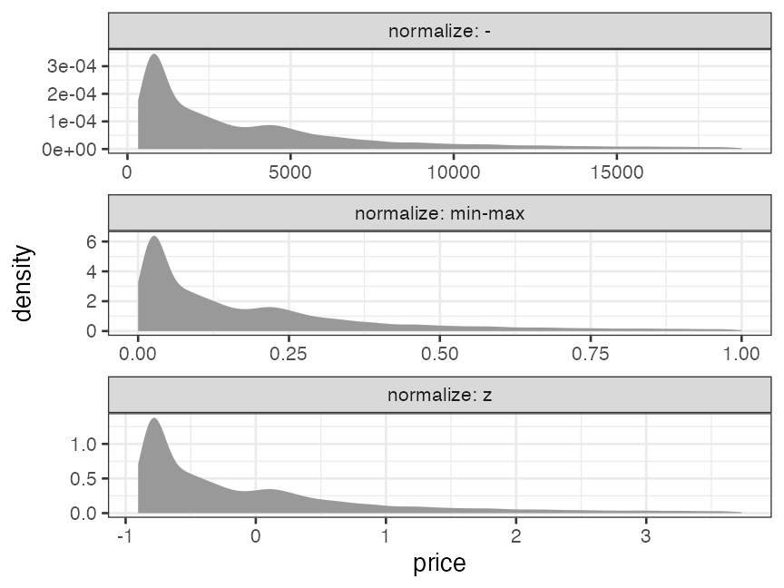

Hands-on Introduction to R 2023
- Introduction: what is data analysis and R basics
- Data visualization and reporting
- Data transformation 1: extract, summarize
- Data transformation 2: join, pivot
- Data cleansing and conversion: numbers, text
- Data input and interpretation
- Statistical modeling 1: probability distribution, likelihood
- Statistical modeling 2: linear regression
https://heavywatal.github.io/slides/english2023r/
Purposes of this hands-on lectures
✅ Every biological research involves data and models
✅ You want to do reproducible analysis
⬜ Learn how to do it and how to learn more
- Overview what R can do.
- Know where to consult when you have a problem.
⬜ Glance at the basics of data analysis
You don’t have to remember every command.
Just repeat forgetting and searching.
Outline of data analysis
- Setup computer environment ✅
- Get and read input data ⬜ day 6
- Exploratory data analysis
- Preparation (harder than it seems) ‚¨ú day 3–5 üëà
- Visualization, generating hypotheses (fun!) ✅ day 2
- Statistical analysis, testing hypotheses ‚¨ú day 7–8
- Report ✅ day 2

Learning data preparation in two categories


- Processing data structure ‚Äî day 3–4
- Extract subsets —
select(),filter() - Summarize by group —
group_by(),summarize() - Sort rows —
arrange() - Combine tables —
*_join() - Pivot longer ↔ wider —
pivot_longer(),pivot_wider()
- Extract subsets —
- Processing data content üëà day 5
- Type conversion: continuous vs discrete, factors, time
- Mathematical conversion: logarithm, normalization
- Handling outliers and missing values
- Character manipulation: pattern matching
tidyverse: a collection of R packages for data science

install.packages("tidyverse")
library(conflicted) # charm for safe coding
library(tidyverse) # load core packages at once
── Attaching core tidyverse packages ──── tidyverse 2.0.0 ──
✔ dplyr 1.1.4 ✔ readr 2.1.5
✔ forcats 1.0.0 ✔ stringr 1.5.1
✔ ggplot2 3.5.1 ✔ tibble 3.2.1
✔ lubridate 1.9.4 ✔ tidyr 1.3.1
✔ purrr 1.0.4
Consistently designed to cover all the processes in data analysis.
Data types (revisit)
- atomic vector: one-dimensional array. very basic.
logical: (TRUEorFALSE)numeric: (integer42Lor real number3.1416)character: ("a string")factor: (hybrid of character and integer)
array: multi-dimensional array.matrix: two-dimensional array.
list: subspecies of vector that can be heterogenous.data.frame: Rectangular table of the vectors. important
There are alternatives calledtibbleandtbl_df.
vector: one-dimensional array
R is good at element-wise operation on vectors.
There is no scalar type; it is treated as a vector of length 1.
x = c(1, 2, 9) # length of 3
x + x # the same length
[1] 2 4 18
y = 10 # length of 1
x + y # the shorter vector is recycled
[1] 11 12 19
x < 5 # is it smaller than 5?
[1] TRUE TRUE FALSE
numeric vector
Type of a real number is double (double-precision floating-point number):
answer = 42
typeof(answer)
[1] "double"
Integers can be created by explicit conversion or with suffix L:
typeof(as.integer(answer))
[1] "integer"
whoami = 24601L
typeof(whoami)
[1] "integer"
Usually you don’t have to care about this, though.
Element-wise mathematical functions
receive a vector, and calculate something for each element:
x = c(1, 2, 3)
sqrt(x)
[1] 1.000000 1.414214 1.732051
log(x)
[1] 0.0000000 0.6931472 1.0986123
log10(x)
[1] 0.0000000 0.3010300 0.4771213
exp(x)
[1] 2.718282 7.389056 20.085537
https://stat.ethz.ch/R-manual/R-patched/library/base/html/00Index.html
data.frame is a set of column vectors
There are several ways to modify column contents:
dia = diamonds # copy to keep the original intact
# dollar operator $
dia$price = 147 * dia$price
# [["column name"]]
dia[["price"]] = 147 * dia[["price"]]
# tidyverse with pipe
dia = diamonds |>
dplyr::mutate(price = 147 * price) |>
dplyr::filter(carat > 1) |>
dplyr::summarize(avg_price = mean(price))
mutate() is easy to incorporate into pipelines.
Normalization (min-max)
so that minimum = 0 and maximum = 1:
normalized_minmax = diamonds |>
dplyr::mutate(price = (price - min(price)) / (max(price) - min(price))) |>
print()
carat cut color clarity depth table price x y z
1 0.23 Ideal E SI2 61.5 55 0.000000e+00 3.95 3.98 2.43
2 0.21 Premium E SI1 59.8 61 0.000000e+00 3.89 3.84 2.31
3 0.23 Good E VS1 56.9 65 5.406282e-05 4.05 4.07 2.31
4 0.29 Premium I VS2 62.4 58 4.325026e-04 4.20 4.23 2.63
--
53937 0.72 Good D SI1 63.1 55 1.314267e-01 5.69 5.75 3.61
53938 0.70 Very Good D SI1 62.8 60 1.314267e-01 5.66 5.68 3.56
53939 0.86 Premium H SI2 61.0 58 1.314267e-01 6.15 6.12 3.74
53940 0.75 Ideal D SI2 62.2 55 1.314267e-01 5.83 5.87 3.64
Normalization (z-score)
so that average = 0 and standard deviation = 1:
normalized_z = diamonds |>
dplyr::mutate(price = (price - mean(price)) / sd(price)) |>
print()
carat cut color clarity depth table price x y z
1 0.23 Ideal E SI2 61.5 55 -0.9040868 3.95 3.98 2.43
2 0.21 Premium E SI1 59.8 61 -0.9040868 3.89 3.84 2.31
3 0.23 Good E VS1 56.9 65 -0.9038361 4.05 4.07 2.31
4 0.29 Premium I VS2 62.4 58 -0.9020815 4.20 4.23 2.63
--
53937 0.72 Good D SI1 63.1 55 -0.2947280 5.69 5.75 3.61
53938 0.70 Very Good D SI1 62.8 60 -0.2947280 5.66 5.68 3.56
53939 0.86 Premium H SI2 61.0 58 -0.2947280 6.15 6.12 3.74
53940 0.75 Ideal D SI2 62.2 55 -0.2947280 5.83 5.87 3.64
price = as.vector(scale(price)) is equivalent.
The shapes of distributions remain the same
Only the value ranges are changed.

They are sensitive to outliers and asymmetric/skewed distributions.
Consider log transformation, outlier removal, and so on before normalization.
Removing outliers
An example to remove the observations out of average ± 3SD ($\lvert z \rvert \ge 3$):
result = diamonds |>
dplyr::filter(abs(price - mean(price)) / sd(price) < 3) |>
print()
carat cut color clarity depth table price x y z
1 0.23 Ideal E SI2 61.5 55 326 3.95 3.98 2.43
2 0.21 Premium E SI1 59.8 61 326 3.89 3.84 2.31
3 0.23 Good E VS1 56.9 65 327 4.05 4.07 2.31
4 0.29 Premium I VS2 62.4 58 334 4.20 4.23 2.63
--
52731 0.72 Good D SI1 63.1 55 2757 5.69 5.75 3.61
52732 0.70 Very Good D SI1 62.8 60 2757 5.66 5.68 3.56
52733 0.86 Premium H SI2 61.0 58 2757 6.15 6.12 3.74
52734 0.75 Ideal D SI2 62.2 55 2757 5.83 5.87 3.64
Note: Whether and how to remove outliers highly depend on the context.
tidyr::drop_na()
drops rows containing missing values NA (in given columns).
df = tibble::tibble(x = c(1, 2, NA), y = c("a", NA, "c"), z = c("D", "E", NA))
df |> tidyr::drop_na()
x y z
1 1 a D
üî∞ Exclude characters with missing height or mass in starwars.
name height mass hair_color skin_color eye_color birth_year sex gender homeworld species films vehicles starships
1 Luke Skywalker 172 77 blond fair blue 19.0 male masculine Tatooine Human <chr [5]> <chr [2]> <chr [2]>
2 C-3PO 167 75 <NA> gold yellow 112.0 none masculine Tatooine Droid <chr [6]> <chr [0]> <chr [0]>
3 R2-D2 96 32 <NA> white, blue red 33.0 none masculine Naboo Droid <chr [7]> <chr [0]> <chr [0]>
4 Darth Vader 202 136 none white yellow 41.9 male masculine Tatooine Human <chr [4]> <chr [0]> <chr [1]>
--
56 Tarfful 234 136 brown brown blue NA male masculine Kashyyyk Wookiee <chr [1]> <chr [0]> <chr [0]>
57 Raymus Antilles 188 79 brown light brown NA male masculine Alderaan Human <chr [2]> <chr [0]> <chr [0]>
58 Sly Moore 178 48 none pale white NA <NA> <NA> Umbara <NA> <chr [2]> <chr [0]> <chr [0]>
59 Tion Medon 206 80 none grey black NA male masculine Utapau Pau'an <chr [1]> <chr [0]> <chr [0]>
tidyr::replace_na()
replaces missing values NA with an arbitrary value.
df = tibble::tibble(x = c(1, 2, NA), y = c("a", NA, "c"), z = c("D", "E", NA))
df |> tidyr::replace_na(list(x = 9999, y = "unknown"))
x y z
1 1 a D
2 2 unknown E
3 9999 c <NA>
üî∞ Replace missing hair color with “UNKNOWN” in starwars.
name height mass hair_color skin_color eye_color birth_year sex gender homeworld species films vehicles starships
1 C-3PO 167 75 UNKNOWN gold yellow 112 none masculine Tatooine Droid <chr [6]> <chr [0]> <chr [0]>
2 R2-D2 96 32 UNKNOWN white, blue red 33 none masculine Naboo Droid <chr [7]> <chr [0]> <chr [0]>
3 R5-D4 97 32 UNKNOWN white, red red NA none masculine Tatooine Droid <chr [1]> <chr [0]> <chr [0]>
4 Greedo 173 74 UNKNOWN green black 44 male masculine Rodia Rodian <chr [1]> <chr [0]> <chr [0]>
5 Jabba Desilijic Tiure 175 1358 UNKNOWN green-tan, brown orange 600 hermaphroditic masculine Nal Hutta Hutt <chr [3]> <chr [0]> <chr [0]>
dplyr::na_if()
converts a value to NA if matched:
df = tibble::tibble(x = c(1, 2, NA), y = c("a", NA, "c"), z = c("D", "E", NA))
df |> dplyr::mutate(x = dplyr::na_if(x, 1), y = dplyr::na_if(y, "a"))
x y z
1 NA <NA> D
2 2 <NA> E
3 NA c <NA>
üî∞ Convert “none” in sex to NA in starwars.
name height mass hair_color skin_color eye_color birth_year sex gender homeworld species films vehicles starships
1 C-3PO 167 75 <NA> gold yellow 112 <NA> masculine Tatooine Droid <chr [6]> <chr [0]> <chr [0]>
2 R2-D2 96 32 <NA> white, blue red 33 <NA> masculine Naboo Droid <chr [7]> <chr [0]> <chr [0]>
3 R5-D4 97 32 <NA> white, red red NA <NA> masculine Tatooine Droid <chr [1]> <chr [0]> <chr [0]>
4 IG-88 200 140 none metal red 15 <NA> masculine <NA> Droid <chr [1]> <chr [0]> <chr [0]>
5 R4-P17 96 NA none silver, red red, blue NA <NA> feminine <NA> Droid <chr [2]> <chr [0]> <chr [0]>
6 BB8 NA NA none none black NA <NA> masculine <NA> Droid <chr [1]> <chr [0]> <chr [0]>
dplyr::coalesce() complements missing values
NA in the first vector is complemented with the value in the next vector:
df = tibble::tibble(x = c(1, 2, NA), y = c("a", NA, "c"), z = c("D", "E", NA))
df |> dplyr::mutate(y_or_z = dplyr::coalesce(y, z))
x y z y_or_z
1 1 a D a
2 2 <NA> E E
3 NA c <NA> c
Different types of variables cannot be used:
df |> dplyr::mutate(x_or_y = dplyr::coalesce(x, y))
Error in `dplyr::mutate()`:
ℹ In argument: `x_or_y = dplyr::coalesce(x, y)`.
Caused by error in `dplyr::coalesce()`:
! Can't combine `..1` <double> and `..2` <character>.
üî∞ Complement missing values in hair_color with skin_color in starwars.
dplyr::if_else() is a vectorized switch
returns a vector filled with elements from x or y depending on condition:
condition = c(TRUE, TRUE, FALSE)
x = c(1, 2, 3)
y = c(100, 200, 300)
dplyr::if_else(condition, x, y)
[1] 1 2 300
üî∞ Increase the height of droids 100-fold in starwars.
name height mass hair_color skin_color eye_color birth_year sex gender homeworld species films vehicles starships
1 Luke Skywalker 172 77 blond fair blue 19.0 male masculine Tatooine Human <chr [5]> <chr [2]> <chr [2]>
2 C-3PO 16700 75 <NA> gold yellow 112.0 none masculine Tatooine Droid <chr [6]> <chr [0]> <chr [0]>
3 R2-D2 9600 32 <NA> white, blue red 33.0 none masculine Naboo Droid <chr [7]> <chr [0]> <chr [0]>
4 Darth Vader 202 136 none white yellow 41.9 male masculine Tatooine Human <chr [4]> <chr [0]> <chr [1]>
--
84 Rey NA NA brown light hazel NA female feminine <NA> Human <chr [1]> <chr [0]> <chr [0]>
85 Poe Dameron NA NA brown light brown NA male masculine <NA> Human <chr [1]> <chr [0]> <chr [1]>
86 BB8 NA NA none none black NA none masculine <NA> Droid <chr [1]> <chr [0]> <chr [0]>
87 Captain Phasma NA NA none none unknown NA female feminine <NA> Human <chr [1]> <chr [0]> <chr [0]>
character type (string)
Using double quotes " is recommended:
x = "This is a string"
y = 'If I want to include a "quote" inside a string, I use single quotes'
Closing quotes are easily forgotten. Calm down, and push esc or ctrlc.
> "This is a string without a closing quote
+
+
+ HELP I'M STUCK
Base R functions for characters are hard to use
-
Inconsistent and cryptic function names:
grep,grepl,regexpr,gregexpr,regexec
sub,gsub,substr,substring -
Inconsistent argument positions:
grep(pattern, x, ...) sub(pattern, replacement, x, ...) substr(x, start, stop) -
Inconsistent treatment of missing values
NA.x = c(1, 2, NA) y = c("a", NA, "c") paste(x, y) # NA is not distinguished from character "NA"[1] "1 a" "2 NA" "NA c"
stringr: part of tidyverse for character processing

- Consistent function and argument names.
|>able: 1st argument is always astringvector to modify.- Respect input attributes and structures.
- Zero-length input produces zero-length output.
- A missing value
NAin input remainsNAin output.
- Well-documented on the official website.


Basic operations on character strings
fruit4 = head(fruit, 4L) |> print()
[1] "apple" "apricot" "avocado" "banana"
stringr::str_length(fruit4)
[1] 5 7 7 6
stringr::str_sub(fruit4, 2, 4) # substring
[1] "ppl" "pri" "voc" "ana"
stringr::str_c(1:4, " ", fruit4, "!") # concatenate
[1] "1 apple!" "2 apricot!" "3 avocado!" "4 banana!"
üî∞ Get a subset of words longer than 9 characters.
üî∞ Apply str_sub() and str_c() to those long words.
Pattern matching
is not just exact match.
# starts with "a"
stringr::str_subset(fruit, "^a")
[1] "apple" "apricot" "avocado"
# ends with "r"
stringr::str_subset(fruit, "r$")
[1] "bell pepper" "chili pepper" "cucumber" "pear"
# 3-4 alphanumeric characters
stringr::str_subset(fruit, "^\\w{3,4}$")
[1] "date" "fig" "lime" "nut" "pear" "plum"
What do ^, $, and other symbols mean?
Regular expressions (regex, regexp)
| meta | matches |
|---|---|
\d |
digit [0-9] |
\s |
space [ \t\n\r] |
\w |
word character [a-zA-Z0-9_] |
. |
any character |
^ |
beginning of line |
$ |
end of line |
| operator | matches |
|---|---|
a? |
0 or 1 time |
a* |
0 or more times |
a+ |
1 or more times |
a{n,m} |
n–m times |
a(?=c) |
a followed by c |
(?<=b)a |
a preceded by b |
https://unicode-org.github.io/icu/userguide/strings/regexp.html#regular-expression-metacharacters
- escape sequence
"\n"is a line break;"\t"is a tab;"\d"is invalid."\\"is a backslash; write"\\d"to mean regex"\d".
Practice of regular expressions
üî∞ Learn pattern matching by applying str_subset() to fruit:
- contains “o”
- starts with “o”
- ends with “berry”
- starts with “c” and ends with “r”
- contains a space; does not contain any space
üî∞ starnames = starwars[["name"]]:
- contains a digit; does not contain any digit
- consists of 3 or more words
- does not contain any lowercase letter
str_detect()
Returns TRUE/FALSE.
fruit4 = head(fruit, 4L)
stringr::str_detect(fruit4, "^a")
[1] TRUE TRUE TRUE FALSE
üî∞ From starwars, extract rows whose name does not contain space.
name height mass hair_color skin_color eye_color birth_year sex gender homeworld species films vehicles starships
1 C-3PO 167 75 <NA> gold yellow 112 none masculine Tatooine Droid <chr [6]> <chr [0]> <chr [0]>
2 R2-D2 96 32 <NA> white, blue red 33 none masculine Naboo Droid <chr [7]> <chr [0]> <chr [0]>
3 R5-D4 97 32 <NA> white, red red NA none masculine Tatooine Droid <chr [1]> <chr [0]> <chr [0]>
4 Chewbacca 228 112 brown unknown blue 200 male masculine Kashyyyk Wookiee <chr [5]> <chr [1]> <chr [2]>
--
21 Tarfful 234 136 brown brown blue NA male masculine Kashyyyk Wookiee <chr [1]> <chr [0]> <chr [0]>
22 Finn NA NA black dark dark NA male masculine <NA> Human <chr [1]> <chr [0]> <chr [0]>
23 Rey NA NA brown light hazel NA female feminine <NA> Human <chr [1]> <chr [0]> <chr [0]>
24 BB8 NA NA none none black NA none masculine <NA> Droid <chr [1]> <chr [0]> <chr [0]>
str_extract()
Returns matched substring or NA.
fruit4 = head(fruit, 4L)
stringr::str_extract(fruit4, "^a..")
[1] "app" "apr" "avo" NA
üî∞ Remove numeric characters from clarity column of diamonds.
carat cut color clarity depth table price x y z
1 0.23 Ideal E SI 61.5 55 326 3.95 3.98 2.43
2 0.21 Premium E SI 59.8 61 326 3.89 3.84 2.31
3 0.23 Good E VS 56.9 65 327 4.05 4.07 2.31
4 0.29 Premium I VS 62.4 58 334 4.20 4.23 2.63
--
53937 0.72 Good D SI 63.1 55 2757 5.69 5.75 3.61
53938 0.70 Very Good D SI 62.8 60 2757 5.66 5.68 3.56
53939 0.86 Premium H SI 61.0 58 2757 6.15 6.12 3.74
53940 0.75 Ideal D SI 62.2 55 2757 5.83 5.87 3.64
str_replace(), str_replace_all()
Those captured by parentheses() can be used by back-reference \1:
fruit4 = head(fruit, 4L)
stringr::str_replace(fruit4, "..$", "!!")
[1] "app!!" "apric!!" "avoca!!" "bana!!"
stringr::str_replace(fruit4, "(..)$", "_\\1_")
[1] "app_le_" "apric_ot_" "avoca_do_" "bana_na_"
üî∞ Replace all the numbers in starwars$name with zero.
name height mass hair_color skin_color eye_color birth_year sex gender homeworld species films vehicles starships
1 C-0PO 167 75 <NA> gold yellow 112 none masculine Tatooine Droid <chr [6]> <chr [0]> <chr [0]>
2 R0-D0 96 32 <NA> white, blue red 33 none masculine Naboo Droid <chr [7]> <chr [0]> <chr [0]>
3 R0-D0 97 32 <NA> white, red red NA none masculine Tatooine Droid <chr [1]> <chr [0]> <chr [0]>
4 IG-00 200 140 none metal red 15 none masculine <NA> Droid <chr [1]> <chr [0]> <chr [0]>
5 R0-P00 96 NA none silver, red red, blue NA none feminine <NA> Droid <chr [2]> <chr [0]> <chr [0]>
6 BB0 NA NA none none black NA none masculine <NA> Droid <chr [1]> <chr [0]> <chr [0]>
Regex for column selection with dplyr, tidyr
matches() can play the roles of starts_with()/ends_with():
# starts_with("c")
diamonds |> dplyr::select(matches("^c"))
# ends_with("s")
starwars |> dplyr::select(matches("s$"))
# digits only
world_bank_pop |>
tidyr::pivot_longer(matches("^\\d+$"), names_to = "year")
See selection helpers for more details.
Formatting strings
fruit4 = head(fruit, 4L)
stringr::str_to_upper(fruit4)
[1] "APPLE" "APRICOT" "AVOCADO" "BANANA"
stringr::str_pad(fruit4, 8, "left", "_") # Fix width by filling spaces
[1] "___apple" "_apricot" "_avocado" "__banana"
stringr is built on top of a more comprehensive package,
stringi:
stringi::stri_trans_nfkc(c("ｶﾀｶﾅ", "４２")) # 半角カナ・全角数字に対処
[1] "カタカナ" "42"
üî∞ Turn starwars’s name column to lowercase.
Converting strings to something else

It is not stringr’s job, but readr’s:
readr::parse_number(c("p = 0.02 *", "N_A = 6e23"))
[1] 2e-02 6e+23
readr::parse_double(c("0.02", "6e+23"))
[1] 2e-02 6e+23
readr::parse_logical(c("1", "true", "0", "false"))
[1] TRUE TRUE FALSE FALSE
readr::parse_date("2020-06-03")
[1] "2020-06-03"
6e+23 means $6 \times 10 ^ {23}$, not $6e^{23}$.
factor type to represent categorical variables
month_levels = c( # possible values
"Jan", "Feb", "Mar", "Apr", "May", "Jun",
"Jul", "Aug", "Sep", "Oct", "Nov", "Dec"
)
x1 = c("Dec", "Apr", "Jan", "Mar") # normal string vector
y1 = factor(x1, levels = month_levels) # convert it to factor
print(y1)
[1] Dec Apr Jan Mar
Levels: Jan Feb Mar Apr May Jun Jul Aug Sep Oct Nov Dec
Looks like character, but they are internally integer:
typeof(y1)
[1] "integer"
as.integer(y1) # factor to integer
[1] 12 4 1 3
üî∞ See str(iris) for a factor variable at hand.
factor: difference from string 1
Possible values (levels) are known and fixed.
That is, a typo becomes NA.
x2 = c("Dec", "Apr", "Jam", "Mar")
factor(x2, levels = month_levels)
[1] Dec Apr <NA> Mar
Levels: Jan Feb Mar Apr May Jun Jul Aug Sep Oct Nov Dec
A string vector including all the levels can be converted easily:
as.factor(starwars[["gender"]])
[1] masculine masculine masculine masculine feminine masculine feminine masculine masculine masculine masculine masculine masculine masculine masculine masculine masculine <NA> masculine masculine masculine masculine masculine masculine masculine masculine feminine masculine masculine masculine masculine masculine masculine feminine masculine masculine masculine masculine masculine masculine masculine feminine masculine masculine feminine masculine masculine masculine masculine masculine masculine masculine masculine feminine masculine masculine masculine masculine <NA> <NA> masculine masculine feminine feminine feminine masculine masculine masculine feminine masculine masculine feminine feminine feminine masculine masculine feminine masculine masculine masculine <NA> masculine masculine feminine masculine masculine feminine
Levels: feminine masculine
factor: difference from string 2
can be sorted in an arbitrary (non-alphabetical) order:
x1 = c("Dec", "Apr", "Jan", "Mar")
sort(x1) # alphabetical order as always
[1] "Apr" "Dec" "Jan" "Mar"
y1 = factor(x1, levels = month_levels)
sort(y1) # in the order of the levels
[1] Jan Mar Apr Dec
Levels: Jan Feb Mar Apr May Jun Jul Aug Sep Oct Nov Dec
factor: categorical variables in figures
can be sorted in an arbitrary (non-alphabetical) order:
mpg_fct = mpg |>
dplyr::mutate(drv = factor(drv, levels = c("f", "r", "4")))
ordered factor
can be compared with inequality operators.
x1 = c("Dec", "Apr", "Jan", "Mar")
y3 = factor(x1, levels = month_levels, ordered = TRUE)
class(y3)
[1] "ordered" "factor"
print(y3)
[1] Dec Apr Jan Mar
Levels: Jan < Feb < Mar < Apr < May < Jun < Jul < Aug < Sep < Oct < Nov < Dec
y3 < "Sep"
[1] FALSE TRUE TRUE TRUE
üî∞ See str(diamonds) for ordered variables at hand.
üî∞ Extract rows whose cut is better than “Premium”.
forcats: part of tidyverse for factor type

fct_reorder(): by another variable.fct_infreq(): to reorder by the frequency of values.fct_relevel(): to change the order by hand.fct_lump(): collapses the least frequent values into “other”.
diamonds_fct = diamonds |>
dplyr::mutate(color = forcats::fct_infreq(color))
mpg_fct = mpg |>
dplyr::mutate(fl = forcats::fct_lump(fl, n = 2))
Practice to reorder variables in figures
üî∞ Reproduce the following figure of mpg:
Converting a categorical variable to index variables
equivalent to pivoting a binary variable wider.
iris |> tibble::rowid_to_column() |>
dplyr::mutate(value = 1L) |>
tidyr::pivot_wider(names_from = Species,
values_from = value, values_fill = 0L)
rowid Sepal.Length Sepal.Width Petal.Length Petal.Width setosa versicolor virginica
1 1 5.1 3.5 1.4 0.2 1 0 0
2 2 4.9 3.0 1.4 0.2 1 0 0
3 3 4.7 3.2 1.3 0.2 1 0 0
4 4 4.6 3.1 1.5 0.2 1 0 0
--
147 147 6.3 2.5 5.0 1.9 0 0 1
148 148 6.5 3.0 5.2 2.0 0 0 1
149 149 6.2 3.4 5.4 2.3 0 0 1
150 150 5.9 3.0 5.1 1.8 0 0 1
üî∞ Try transforming back to the original iris.
Date-time type: POSIXct, POSIXlt
- POSIXct: elapsed time since the epoch in seconds. machine-friendly.
- POSIXlt: named list(sec, min, hour, mday, mon, year, …). human-readable.
now = "2023-04-12 14:10:00"
ct = as.POSIXct(now)
unclass(ct)
[1] 1681276200
attr(,"tzone")
[1] ""
lt = as.POSIXlt(now)
unclass(lt) |> as_tibble()
sec min hour mday mon year wday yday isdst zone gmtoff
1 0 10 14 12 3 123 3 101 0 JST NA
Who is in charge of date-time in tidyverse?
lubridate — tidyverse package for date and time

convert character/numeric vectors to POSIXct date times:
lubridate::ymd(c("20230412", "2023-04-12", "23/04/12"))
[1] "2023-04-12" "2023-04-12" "2023-04-12"
extract values from POSIXct in arbitrary unit:
today = lubridate::ymd(20230412)
lubridate::month(today)
[1] 4
lubridate::wday(today, label = TRUE)
[1] Wed
Levels: Sun < Mon < Tue < Wed < Thu < Fri < Sat
Processing data contents | roundup
- Types of atomic vectors: character, numeric, factor, datetime, etc.
- stringr for character type
- Regular expressions are super-powerful.
- forcats for factor type
- lubridate for date and time
Print out PDF cheat sheets, and keep them within reach.
Now you have skills for data preparation
- Processing data structure day 3 and 4
- Extract subsets —
select(),filter() - Summarize by group —
group_by(),summarize() - Sort rows —
arrange() - Combine tables —
*_join() - Pivot longer ↔ wider —
pivot_longer(),pivot_wider()
- Extract subsets —
- Processing data content üëà day 5
- Type conversion: continuous vs discrete, factors, time
- Mathematical conversion: logarithm, normalization
- Handling outliers and missing values
- Character manipulation: pattern matching
üî∞ Challenge: play with built-in datasets
dplyr::storms
dplyr::starwars
tidyr::billboard
tidyr::cms_patient_experience
tidyr::cms_patient_care
tidyr::relig_income
tidyr::us_rent_income
tidyr::who
tidyr::population
tidyr::world_bank_pop
forcats::gss_cat
lubridate::lakers
ggplot2::midwest
ggplot2::msleep
ggplot2::txhousing
Reference
- R for Data Science — Hadley Wickham et al.
- https://r4ds.hadley.nz, Paperback, 日本語版書籍
ÂâçÂá¶ÁêܧßÂÖ® — Êú¨Ê©ãÊô∫ÂÖâ
R„ɶ„ɺ„Ç∂„ÅÆ„Åü„ÇÅ„ÅÆRStudio[ÂÆüË∑µ]ÂÖ•ÈñÄ (ÂÆáÂÆôËàπÊú¨) — ÊùæÊùë„Çâ
- Official documents:
- tidyverse, dplyr, tidyr, stringr, forcats, lubridate
- Older versions
- 「Rにやらせて楽しよう — データの可視化と下ごしらえ」 岩嵜航 2018
- 「Rを用いたデータ解析の基礎と応用」石川由希 2019 名古屋大学
- 「Rによるデータ前処理実習」 岩嵜航 2022 東京医科歯科大
- 「Rを用いたデータ解析の基礎と応用」 石川由希 2023 名古屋大学